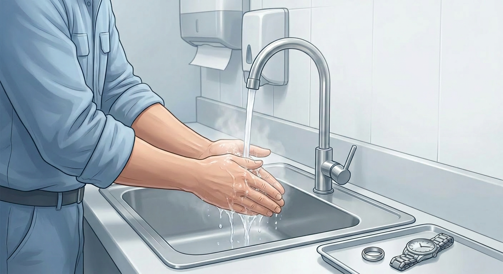
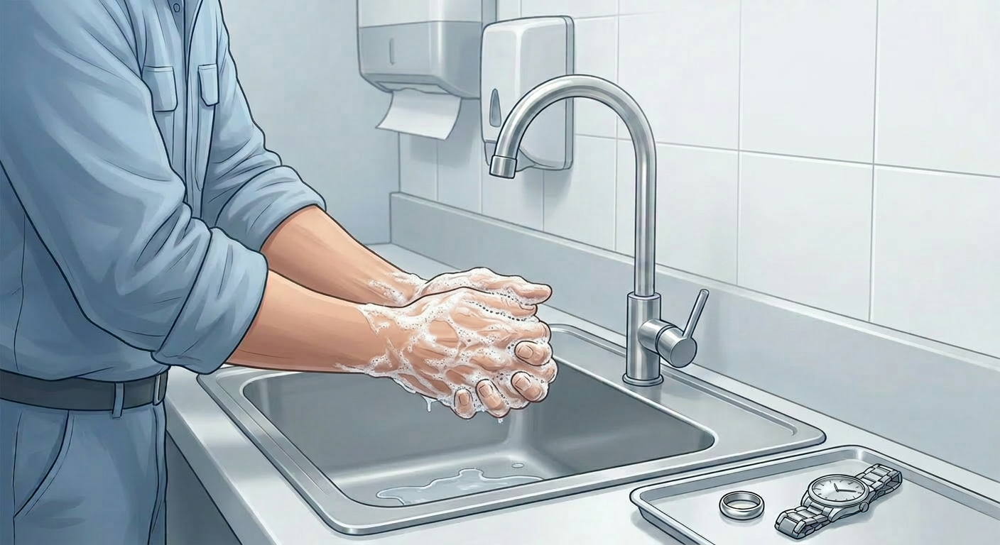
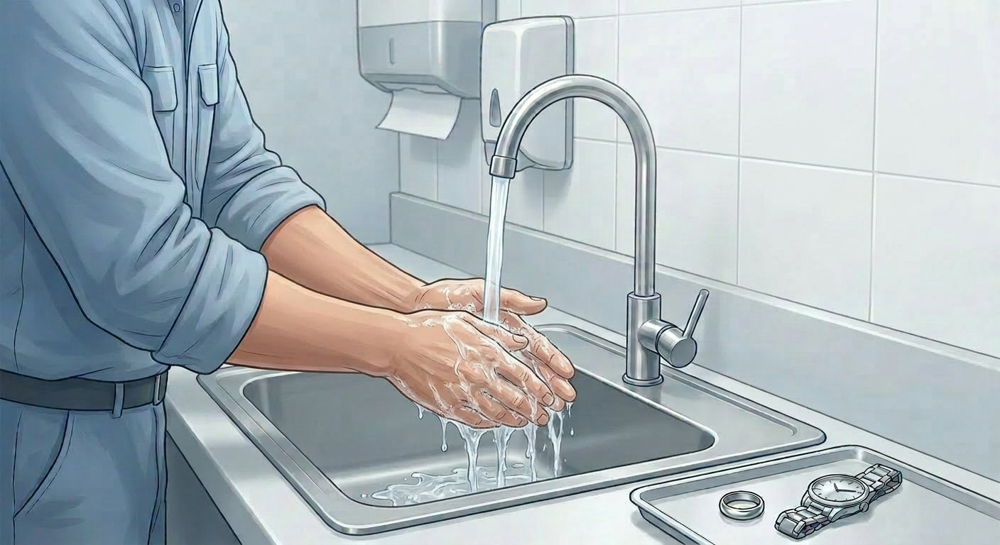

Harbor & Hearth Standard Operating Procedure (SOP)
SOP-HYG-01
Hygiene · All Staff
Handwashing Procedure
Wash hands at the correct times and with the correct technique so food, equipment, guests, and coworkers are protected from contamination.
Owner note: visual SOPs are useful for training because staff can see the standard instead of interpreting a wall of text.
Key Actions
- Wash before food handling and after contamination triggers.
- Lather with soap for at least 20 seconds.
- Rinse fully and dry with a single-use towel.
- Never use sanitizer or gloves as a replacement for handwashing.
1
Purpose
This SOP defines the required standard for handwashing procedure so staff complete the task safely, consistently, and in the correct order.
2
Scope
Applies to All Departments · Hygiene and any staff member assigned to this process, task, equipment, checklist, or manager follow-up.
3
Responsibilities
- All assigned staff must follow this SOP exactly as written during the applicable task or shift.
- The responsible manager or team (General Manager) is responsible for training staff, answering questions, and verifying that the procedure is followed.
- The shift lead or manager must stop the task and start corrective action when the standard cannot be met.
4
Definitions / Key Terms
| Term | Definition |
|---|
| SOP | Standard Operating Procedure; the approved method for completing this task. |
| Person in Charge | The manager or certified lead responsible for supervising the task and making food safety decisions during the shift. |
| Corrective Action | The required response when a step, limit, record, or safety standard is missed or cannot be verified. |
5
Materials / Equipment Needed
- Approved tools, equipment, utensils, and supplies required for the task.
- Required personal protective equipment, cleaning supplies, labels, logs, or checklists.
- Working hand sink, sanitizer, thermometer, or other food safety control equipment when applicable.
6
Procedure (Step-by-Step)
When to Wash
- Before starting work or handling ready-to-eat food
- After touching raw food, face, phone, money, waste, or dirty dishes
- After removing gloves, eating, drinking, sneezing, coughing, or using the toilet
Step 1
Wet hands
Use warm running water at a designated handwashing sink.

Step 2
Lather with soap
Scrub palms, backs of hands, between fingers, thumbs, wrists, and under nails for 20 seconds.

Step 3
Rinse and dry
Rinse fully, then dry with a single-use paper towel. Use the towel to turn off taps if needed.

7
Safety & Compliance Considerations
Follow all food safety, workplace safety, sanitation, allergen, chemical, equipment, and regulatory requirements that apply to this task. Stop and notify the manager when safety cannot be verified.
8
Quality Control / Verification
- Confirm each step was completed in the required order and within the required standard.
- Manager or shift lead verifies the finished work before the station, item, or record is released for use.
- Correct and document any missed step, unsafe condition, incomplete record, or unclear responsibility.
9
Documentation & Records
- Complete any required checklist, log, label, or manager note tied to this SOP.
- Record corrective actions with the date, time, item or area affected, action taken, and manager initials.
- Keep completed records in the assigned location for manager review and inspection readiness.